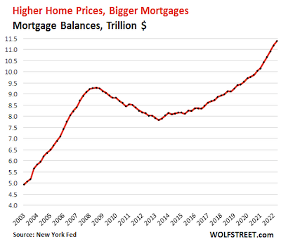
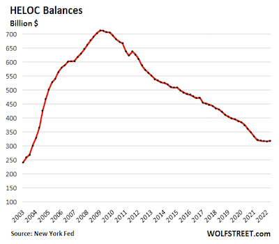
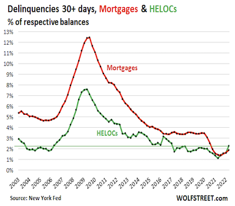
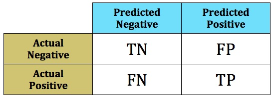
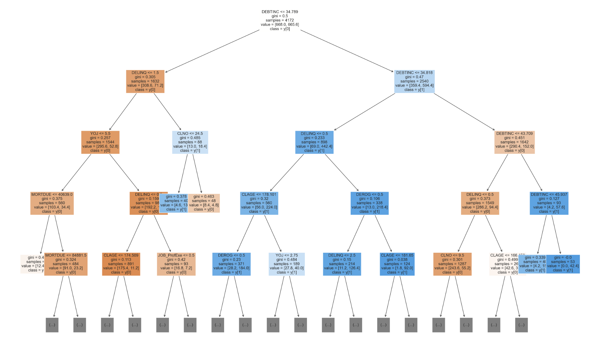

Totalling $11.4 trillion in Q2 2022, mortgages represent
by far the biggest part of the US consumer debt
followed by student loans ($1.6 trillion), auto loans
($1.5 trillion), credit cards ($890 billion), other
loans ($470 billion), and
HELOCs ($320 billion).

After a long decline following the 2008 financial
crisis, home equity loans and lines of credit have
ticked up, in part due to the high interest rates.
Data from TransUnion
shows a 47 percent increase in the origination of home
equity loans and a 41 percent uptick in home equity
lines of credit (HELOCs), in the third quarter of 2022.

But the delinquencies for mortgages and HELOCs have also
crept up.
In fact, the HELOC delinquency rate in Q2 2022 surpassed
the mortgage delinquency, which is highly unusual.

Problem Definition
The Objective:
Considering the rising risks and opportunities, it is
particularly important for banks to be judicious about their
loan approval process.
The objective is to build a classification model to predict
clients who are likely to default on their loan and give
recommendations to the bank on the important features to
consider while evaluating a loan application.
Specifically, we want to help the bank avoid two types of
errors:
Type I error - Fail to approve a loan when the applicant would not have
defaulted (false positive)
Type II error - Approve a loan when the applicant ends up defaulting (false negative)
The latter scenario is the costliest to the bank and we want
to build a model that minimizes false negatives, or Type II errors - that is,
predicting that a borrower will not default when the borrower
actually default.
Problem Definition
The Metrics:
Given the objective of minimizing false negatives, the classifier models considered were evaluated based on their performance on the confusion matrix.
A measure of particular interest for this problem is the recall, or the proportion of borrowers that defaulted that were correctly identified as such.

Recall = TP / (TP + FN)
Model Selection
The Process:
01. Data Overview
Dataset provided: 5960 labeled observations. Discovery of the data: shape, missing values, duplicate values, types of variables, summary statistics.
02. Exploratory Data Analysis
Investigate the data: visualize univariate, bivariate and multivariate distributions to uncover patterns and correlations.
Prepare the data: decide upon the treatment of missing values and outliers. Engineer new features.
03. Model Building
Split data into training and testing sets (better yet: training | validation | holdout). Perform scaling if needed and balance the classes if possible. Select a number of models, get their base results and carry out parameter tuning to optimize the model.
04. Model Evaluation & Selection
Compare the models' performance based on the metrics chosen in the problem definition phase. All models perform with varying predictive powers. Additional considerations for selecting the final model include the interpretability of the results, and the ease of tuning.
05. Analysis of Findings & Limitations
There is a trade-off between precision and recall that needs to be discussed with the business stakeholders. How easily and often the model can and should be revisited with new data is also a consideration, especially in a quickly changing economic environment. The process should be iterative, with new features engineered, and models re-evaluated.
Although the XGBoost Classifier model offered the best overall metrics, the tuned Decision Tree classifier was preferred because it provided the following two advantages:
a 80% recall for class 1, compared to 68% for class 1 with the XGBoost Classifier - in other words, the preferred model is able to correctly predict if a borrower will default 80% of the time.
a higher level of transparency, taking into account the financial institution regulatory requirements for disclosing the loan approval process. In particular, the tuned Decision Tree classifier model is easier to interpret and allows bank officers to understand and convey thresholds value on particular predictors for loan default.
Findings
Key insights from the analysis of 5,960 recent home equity loans are as follows:
Debt-to-income ratio is by far the most important predictor of loan default.
Borrowers with a debt-to-income ratio between 34.79 and 34.82 seem likely to default, as well as borrowers with a debt-to-income exceedingly high over 43.71.
Among the borrowers with a debt-to-income ratio less than 34.79, those who have two or more delinquent credit lines (cut point is 1.5 across the sample) appear likely to default as well, especially if they have 24 or less existing credit lines. That indicates that they are unable to keep a smaller number of credit lines in good standing and does not bode well for being able to maintain a new HELOC.

The model can be used during the phase of screening loan applicants (given that the required input variables are available) and subsequently deciding whether or not to approve the issuance of the loan.